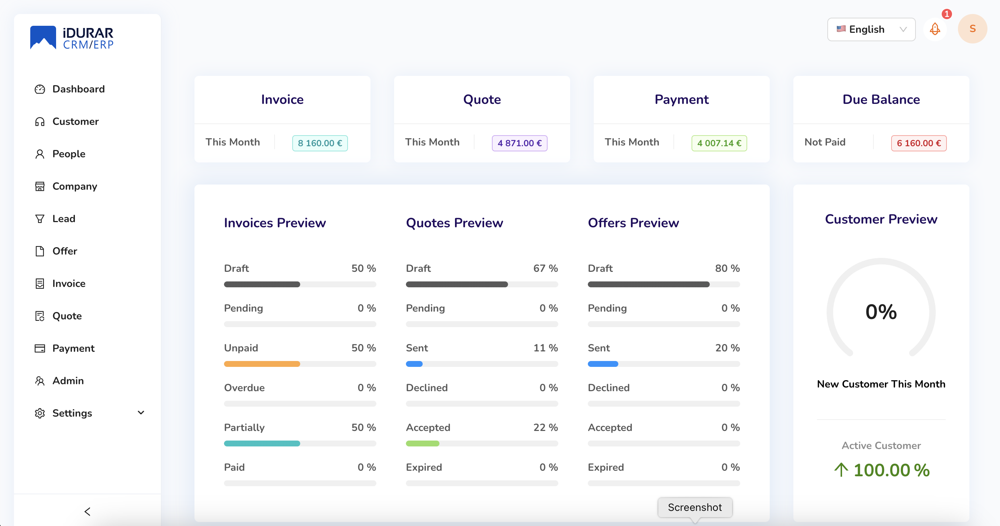

Introduction
The MERN stack is one of the most popular web development stacks today. It consists of MongoDB, Express.js, React, and Node.js, offering developers a powerful full-stack solution. In this post, we'll explore the key features of the MERN stack, how to get started, and some best practices for building scalable applications.
What is MERN Stack?
The MERN stack is a JavaScript-based technology stack used for building modern web applications. Here’s a breakdown of each component:
- MongoDB: A NoSQL database for storing application data.
- Express.js: A web application framework for Node.js, handling the backend logic.
- React: A front-end library for building user interfaces.
- Node.js: A JavaScript runtime that allows JavaScript to run on the server-side.

Why Choose the MERN Stack?
The MERN stack provides developers with an all-JavaScript environment, making development faster and more efficient. Additionally, MongoDB’s schema-less nature allows for greater flexibility, while React offers a powerful, component-based architecture for building dynamic UIs.
Getting Started with MERN
To start building with the MERN stack, you’ll need to set up each component. Begin by installing Node.js and MongoDB. Next, create a new React app and connect it to your Node.js backend. Don’t forget to set up Express.js for handling API requests!
Conclusion
The MERN stack offers a modern, JavaScript-driven approach to web development that is both scalable and powerful. Whether you’re building a small project or a large-scale application, MERN provides the tools you need for success.